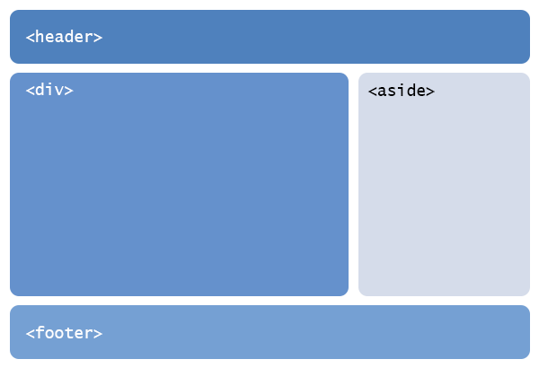
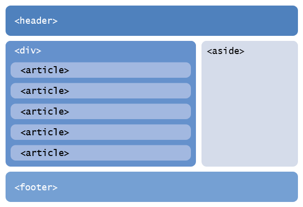
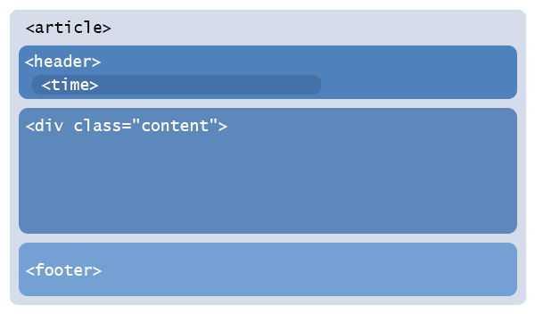
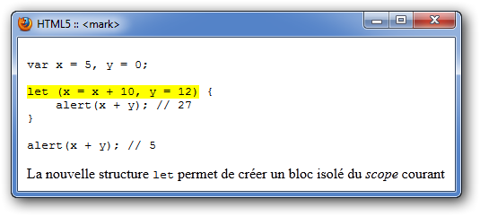
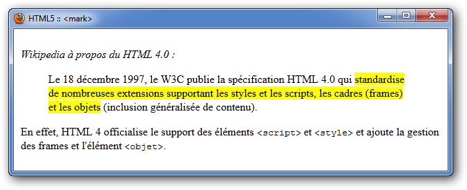

Vous connaissez HTML5 mais vous avez du mal à utiliser les balises appropriées ? Quelles balises utiliser et où les utiliser ?
Ce tutoriel est fait pour vous ! HTML5 comporte bon nombre d'éléments possédant un sens sémantique fort, mais il n'est pas facile de savoir quand les utiliser, par exemple pour afficher les articles ou les commentaires dans un blog. Quand faut-il utiliser la balise <nav> ? La balise <aside> ? Plutôt <div> ou <section> ? Et pourquoi pas <header> pour les en-têtes des articles ?
Beaucoup de questions... qui trouveront leurs réponses dans ce tutoriel ! Nous allons voir comment créer la structure HTML5 d'un blog : la page de base, les articles ainsi que les commentaires, et bien évidemment, le contenu des articles. Ce sera aussi l'occasion de parler des règles d'accessibilité ARIA, une norme trop méconnue du W3C ainsi que de la spécification Microdata introduite par HTML 5..
Avant de commencer, un petit rappel sur la structure minimale d'une page en HTML 5 s'impose :
<!DOCTYPE html>
<html>
<head>
<meta charset="utf-8" />
<title>Blog en HTML5 qui va bien</title>
<!--[if lt IE 9]><script src="http://html5shiv.googlecode.com/svn/trunk/html5.js"></script><![endif]-->
</head>
<body>
</body>
</html>
La première étape est de créer la structure globale de la page, c'est-à-dire la bannière/en-tête, la colonne de navigation, le corps de la page et le pied de page. Ça tombe bien, c'est le plus facile et ce que vous connaissez certainement. La mise en page va se faire avec 4 éléments principaux :

<header> va englober tout ce qui se trouve dans l'en-tête de la page, à savoir la bannière, une éventuelle barre de menus (speedbar), un logo, une interface de connexion... ;
<aside> va englober le menu latéral de droite. Cet élément est utilisé pour contenir des éléments servants à la navigation sur le site ;
<div> va correspondre à corps de la page, c'est-à-dire l'endroit où se trouvera le contenu de la page ;
<footer> va englober les informations du pied de page : copyright, liens de contact, mentions obligatoires...
L'élément <aside> ne doit-il pas être réservé pour afficher des informations annexes ?
Ça, c'est la première utilisation de cet élément, mais le W3C a récemment modifié son emploi, en raison de l'incompréhension des développeurs. En effet, beaucoup utilisaient <aside> pour afficher des menus latéraux, alors que <aside> ne devait s'utiliser qu'au sein des <articles> pour afficher des informations supplémentaires en relation avec l'article. Bref, c'était un peu complexe et pas grand monde utilisait <aside> correctement. Le W3C a donc modifié la spécification pour légitimer deux utilisations d'<aside> :
Pour déterminer une sidebar, c'est-à-dire un menu latéral comme nous le faisons ici ;
Pour afficher des informations en relation avec un article. En ce cas, <aside> doit être contenu dans l'élément <article>.
Il est fréquent, pour des besoins liés au design, d'englober la totalité de la page dans un conteneur. On appelle ça un wrapper. Il faudra utiliser un élément <div> :
<body>
<div id="wrapper">
<header id="header"><!-- l'en-tête --></header>
<aside id="sidebar"><!-- le menu latéral --></aside>
<div id="main"><!-- le contenu --></div>
<footer id="footer"><!-- le pied de page --></footer>
</div>
</body>
On définit également les différents id. C'est important, car il y aura plusieurs éléments <header> et <footer> dans certaines pages du blog. On le verra en abordant la structure des articles.
Des <div> ? Et pourquoi pas des éléments <section> ?
<section> et <div>
Un <div> est ce que l'on appelle un conteneur générique, tout comme <span>. Il ne possède aucune fonction sémantique, il n'a pas de sens, il est neutre. L'élément <section> est un élément qui regroupe des informations sous une même thématique. <section> n'est PAS le nouveau <div> d'HTML 5 ! Voici d'ailleurs ce que le W3C en dit :
Citation : Spécification HTML 5
The section element represents a generic document or application section…The section element is not a generic container element. When an element is needed for styling purposes or as a convenience for scripting, authors are encouraged to use the div element instead.
Citation : Spécification HTML 5 - Traduction
L'élément section représente un document générique ou une section d'une application. L'élément section n'est pas un conteneur générique. Quand un élément est nécessaire pour l'application de styles ou pour être utilisé avec des scripts, les auteurs sont encouragés à utiliser l'élément div.
De plus, <section> est soumis à une hiérarchie, exactement comme le sont les éléments <h1>, <h2>, <h3>... <h6>. Les sections s'imbriquent en sous-sections qui doivent avoir chacune un contenu bien défini. Les éléments de section peuvent donc être utilisés dans le but de hiérarchiser une page. Voici un exemple correct d'une telle utilisation :
<body>
<h1>Titre principal de la page</h1>
<section>
<h1>Premier sous-titre d'ordre 1</h1>
<section>
<h1>Premier sous-sous-titre d'ordre 1</h1>
<h2>Premier sous-sous-titre d'ordre 2</h2>
</section>
</section>
<section>
<h1>Deuxième sous-titre d'ordre 1</h1>
</section>
</body>
Comme le montre la structure ci-dessus, chaque section est à même de contenir son propre jeu de titres hiérarchisés. Il ne faut donc pas confondre les sections et les titres.
Pour en revenir aux <div>, vous pouvez en ajouter pour les besoins du design, ce genre de chose étant fréquent :
<header id="header"><!-- l'en-tête --></header>
<div id="sub-wrapper">
<aside id="sidebar"><!-- le menu latéral --></aside>
<div id="main"><!-- le contenu --></div>
</div>
<footer id="footer"><!-- le pied de page --></footer>
La bannière et/ou le titre du blog
Le titre du blog peut être placé dans un titre <h1>, au sein de l'élément <header>. S'il s'agit d'une bannière sous forme d'image, il suffit de la placer dans le <h1>, en n'oubliant pas de spécifier un attribut alt à l'image :
<header>
<h1><img src="banner.png" alt="Le Site du Zéro" /></h1>
</header>
Le cas de la speedbar
Il se peut que vous placiez une speedbar dans l'en-tête de votre site Web. Comme une speedbar est dédiée à la navigation dans le site, l'élément <nav> s'impose de lui-même puisque cet élément est destiné à afficher des informations de navigation, autrement dit des liens. Une speedbar digne de ce nom doit également être structurée sous forme de liste à puces, puisqu'il s'agit d'une liste de liens :
<header>
<nav>
<ul>
<li><a href="index.htm" title="Accès à la page d'accueil">Accueil</a></li>
<li><a href="trucs.htm" title="Accès à mes trucs et astuces">Trucs</a></li>
<li><a href="cntct.htm" title="Accès à la page de contact">Contact</a></li>
</ul>
</nav>
</header>
C'est déjà un bon début. Améliorons tout ça grâce à ARIA !
Vous avez peut-être déjà aperçu des attributs role dans certains codes HTML, notamment ceux issus de WordPress. Ces attributs font partie d'une spécification du W3C : WAI-ARIA. Cette norme, couramment appelée ARIA, a été introduite pour pallier le manque d'accessibilité des applications Internet et plus particulièrement des widgets.
On entend par widget des morceaux de code HTML et Javascript servant à créer des éléments de contrôle, comme des barres de progression, des sélecteurs de couleurs, des fausses cases à cocher avec un état "semi-coché" et d'autres choses impossibles via les éléments HTML traditionnels. ARIA date d'avant l'avènement d'HTML 5. Alors qu'HTML 5 se veut plus accessible, plus sémantique, autant en profiter pour introduire ARIA, une norme peu utilisée et méconnue, mais pourtant implémentée au sein des outils d'aide à la lecture pour les personnes non voyantes. ARIA n'est donc pas quelque chose qui va être utile pour les navigateurs traditionnels, mais bien par les outils d'assistance à la lecture comme les lecteurs d'écran que sont les synthèses vocales et les afficheurs braille.
La norme ARIA introduit l'attribut role, qui peut s'utiliser au sein des éléments HTML. Le but de cet attribut est d'indiquer quel est le rôle de l'élément en question. À cela s'ajoute un grand nombre d'attributs dont le nom commence par aria-. Le plus connu est certainement aria-required qui est une manière d'indiquer qu'un champ de formulaire doit être remplis.
Mais, en HTML 5, les champs possèdent déjà un attribut required. Pourquoi utiliser aria-required ?
Parce que leur utilité n'est pas la même. required sera reconnue par le navigateur, et ce dernier empêchera l'utilisateur d'envoyer le formulaire tant que le champ n'est pas rempli. aria-required va indiquer à la synthèse vocale que l'élément doit être renseigné. En quelque sorte, c'est l'équivalent pour les non voyants du petit astérisque que l'on place pour indiquer que le champ ne peut être omis.
Dans le cas qui nous occupe ici, nous allons surtout utiliser l'attribut role pour définir le... rôle des différentes parties du site, en plus des éléments HTML 5. Eh oui, deux éléments <section> peuvent très bien avoir deux rôles différents ! Nous n'allons donc pas approfondir la création de widgets au moyen des attributs aria- car ce n'est pas le but de ce cours.
Les valeurs de l'attribut role
L'attribut role possède un certain nombre de valeurs prédéfinies classées en catégories. Deux catégories vont nous intéresser : Document Structure et Landmark Roles. La première, Document Structure, recense les rôles utilisés pour décrire la structure du contenu de la page. On y trouve les rôles suivants :
L'autre catégorie, Landamrk Roles est plus succincte, mais surtout plus importante. Il s'agit ici de décrire les éléments auxquels le lecteur veut accéder en priorité. Voici les rôles disponibles :
application : il s'agit d'une application
banner : il s'agit d'une bannière
complementary : il s'agit d'informations complémentaires
contentinfo : il s'agit d'informations quant au contenu
form : il s'agit d'un formulaire
main : il s'agit de la structure principale de la page (ce qui englobe le contenu)
navigation : il s'agit d'informations sur la navigation. C'est l'équivalent de <nav>
search : il s'agit d'un formulaire de recherche
Reprenons la structure de notre blog
Nous allons donc ajouter des attributs role là où il en faut. Le premier élément qui peut posséder un role est <body> : on va en profiter pour dire qu'il s'agit d'un document et non d'une application : <body role="document">.
Ensuite, on arrive dans les <header>. Il n'y a pas vraiment de rôle pour définir un en-tête, donc on laisse comme ça et on s'intéresse à la bannière, à laquelle on va ajouter un rôle banner :
<h1 role="banner"><img src="banner.png" alt="Le Site du Zéro" /></h1>
Au niveau de la speedbar, on ajoute le rôle navigation : <nav role="navigation">.
Puis, en ce qui concerne le menu latéral, on ajoute le rôle complementary : <aside role="complementary">. Pour <div id="main">, on va pouvoir mettre <div id="main" role="main">. Mais attention, il ne peut y avoir qu'un seul main dans un document, et c'est ici qu'il faut le placer puisqu'il s'agit du contenu de la page.
Et pour terminer, on définit le rôle du <footer> à contentinfo. Ici aussi, c'est comme pour le main, il ne peut y en avoir qu'un.
Voici ce que ça donne :
<body role="document">
<div id="wrapper">
<header id="header">
<h1 role="banner"><img src="" alt="" /></h1>
<nav role="navigation">
<ul>
<li><a href="index.htm" title="Accès à la page d'accueil">Accueil</a></li>
<li><a href="trucs.htm" title="Accès à mes trucs et astuces">Trucs</a></li>
<li><a href="cntct.htm" title="Accès à la page de contact">Contact</a></li>
</ul>
</nav>
</header>
<div id="sub-wrapper">
<aside id="sidebar" role="complementary"></aside>
<div id="main" role="main"></div>
</div>
<footer id="footer" role="contentinfo"></footer>
</div>
</body>
Maintenant que la structure principale est faite, attaquons-nous à la structure des articles !

La page d'accueil affiche généralement les derniers articles publiés, tandis qu'une page seule n'affiche qu'un seul article. Dans les deux cas, la structure HTML de l'article ne change pas.
Structure d'un article simple
Chaque article sera contenu dans un élément <article role="article">, lequel contiendra un <header> et un <footer>. L'attribut role indique ici qu'il s'agit bien d'un article, qu'il ne faudra pas confondre avec un commentaire, comme nous le verrons plus bas. Un article est un peu comme une page dans la page : un conteneur, un en-tête avec le titre et les informations de publication et un pied de page avec d'autres infos comme les tags. Voici le schéma d'un article simple :

Un article contient 3 choses : le contenu, l'en-tête et le pied. Au niveau du contenu, on peut le placer dans un simple <div>, puisqu'il est lui-même englobé dans <article>. Il suffit juste de différencier l'en-tête et le pied du contenu, d'où l'utilisation des éléments <header> et <footer>.
L'en-tête
Cette dernière va contenir le titre de l'article ainsi que les informations de publication comme la date et l'heure. Ces informations temporelles se placent par le biais d'un élément <time>. Cet élément possède deux attributs : datetime qui est la date et pubdate, un attribut booléen qui indique qu'il s’agit d'une date de publication :
Publié par <cite>Thunderseb</cite> le <time datetime="2012-03-30T13:37:00Z" pubdate="pubdate">30 mars 2012 à 13h37</time>
Au niveau du titre, un élément de titre comme <h1> doit être utilisé. Voici ce que donne le code HTML d'un article :
Un <h1> pour le titre des articles ? Mais il y a déjà un <h1> pour le titre de la page !
Et alors ? Souvenez-vous de mon exemple avec les imbrications d'éléments <section> ! Du temps d'HTML 4, il était courant et recommandé de ne placer qu'un seul <h1> par page : le titre. Mais en HTML 5, avec l'avènement de l'élément <article>, plusieurs <h1> sont autorisés. Il faut en effet voir l'<article> comme une "page" dans la page : l'article possède son propre titre, sa propre hiérarchie de titres, son en-tête, son pied...
Un article avec commentaires
Si l'article est affiché sur une page seule (et pas sur la page d'accueil), il est courant d'y afficher les commentaires.
Les commentaires se placent également dans des éléments <article>, lesquels sont englobés dans un élément <section>, car il s'agit de bien différencier les commentaires de l'article lui-même. Chaque commentaire peut être structuré comme un article, c'est-à-dire avec un en-tête, un contenu et, plus rarement, un pied. En bref, chaque commentaire est un article à part entière !
Comme premier enfant de <section>, on peut placer un élément avec un rôle sectionhead, qui indiquera le titre de ladite <section>.
N'oubliez-pas les liens de navigation qui permettent de passer d'une page à l'autre, qu'il s'agisse des commentaires ou tout simplement des articles précédents et/ou suivants. Comme pour tout ce qui concernant la navigation sur le site, la balise <nav> fera merveille.
HTML 5 introduit également une nouvelle norme : Microdata, qui va grandement simplifier l'utilisation des microdonnées. Mais, peut-être ne savez-vous pas ce que sont les microdonnées...
Les microdonnées
L'origine : les microformats
Depuis toujours, les développeurs ont cherché à donner du sens aux éléments HTML pour en faciliter la lecture par les robots de référencement ou des scripts de conversion et d'analyse. A l'époque, ça se faisait avec les moyens du bord : l'attribut class. Plusieurs spécifications de microformats existent, en fonction de leur utilité. Par exemple, la spécification geo permet d'indiquer des latitudes et des longitudes. µCalendar, de sont côté, rassemble des classes pour définir un calendrier.
Vous avez peut-être même déjà croisé la spécification hAtom sans le savoir, notamment au sein du célèbre CMS WordPress. Cette spécification définit des classes pour la publication. On y retrouve des classes comme hentry, entry-title, entry-summary, author, bookmark...
Mais bon, jouer avec des noms de classes n'est pas l'idéal, car ce n'est pas fait pour ça.
Compliquons tout : RDFa
La norme RDFa est un standard du W3C qui permet de décrire n'importe quelle donnée présente dans une page Web (XHTML) ou un document XML. Il "suffit" de créer un document RDF qui décrit l'utilisation des données, puis d'utiliser les nouveaux attributs property et content pour identifier les données.
Comme ça nécessite d'utiliser des espaces de nom (c'est compatible XML), du RDF ainsi qu'XHTML1.1, autant dire que ça n'a pas conquis grand monde...
Fraîcheur avec HTML 5 : Microdata
La norme Microdata, sortie avec HTML 5, mélange la facilité des microformats avec un soupçon d'inspiration RDFa (juste un). Microdata ajoute 5 attributs utilisables sur la plupart des éléments HTML :
itemscope : crée un nouvel item ;
itemtype : spécifie l'URL contenant le vocabulaire utilisé au sein de l'item ;
itemid : définit un identifiant unique pour l'item ;
itemprop : indique la nature du contenu ;
itemref : permet de créer une référence, c'est-à-dire lier un item avec un autre, qui fournirait des informations plus détaillées. C'est un peu spécial, et un paragraphe est destiné à itemref à la fin de cette sous-partie.
Ça peut paraître compliqué, mais c'est en fait assez simple. Supposons que l'on veuille donner du sens à cette adresse :
Google, Bing et Yahoo se sont alliés pour créer Schema.org, qui est un site qui fournit du vocabulaire pouvant être utilisé au sein des Microdatas. Le site met à disposition plusieurs listes de vocabulaire. Comme nous allons décrire une adresse postale, nous allons utiliser le vocabulaire PostalAddress.
On commence par ajouter l'attribut itemscope à l'élément <div>, ce qui indique que tout ce qui sera contenu à l'intérieur de ce élément est décrit par un Microdata. On lui ajoute également l'attribut itemtype, avec comme valeur l'URL de la liste de vocabulaire utilisée :
Si vous jetez un œil à la liste de vocabulaire, vous contacterez plusieurs propriétés intéressantes comme addressCounty, postalCode ou streetAddress. En ajoutant plusieurs <span> pourvus d'un attribut itemprop, nous sommes désormais en mesure de décrire convenablement l'adresse :
Et voilà, notre adresse est intégralement décrite ! L'avantage de décrire en utilisant une liste de vocabulaire issue de Schema.org est que les principaux moteurs de recherche seront en mesure de comprendre ce qui est décrit.
Il existe donc d'autres listes ?
Bien sûr, tout le monde peut créer sa propre liste ! Le site data-vocabulary.org met à disposition plusieurs listes. Si nous avions décrit notre adresse avec la liste de vocabulaire Address, issue de data-vocabulary.org, nous aurions ceci :
Je vous conseille d'avoir recours aux listes issues de Schema.org, notamment pour la meilleure reconnaissance par les moteurs de recherche. Parcourez le site, au départ de cette page pour voir ce qui est proposé. Chaque liste de vocabulaire est accompagnée d'exemples d'utilisation. Même si c'est en anglais c'est assez facile de s'y retrouver. Voici quelques listes qui vous seront certainement utiles :
CreativeWork : une liste pour décrire du contenu "créatif" générique, comme un livre, une page web, un article. Vous pouvez utiliser une liste plus spécifique, découlant de CreativeWork :
Avec WebPage, vous pouvez utiliser la propriété breadcrumb pour décrire un fil d'Ariane par exemple. Utilisez également mainContentOfPage et primaryImageOfPage pour indiquer le contenu principal de la page ainsi que l'image principale (l'image la plus importante, qui reflète le mieux le contenu de la page). Placez donc mainContentOfPage sur le <div id="main"> :
Libre à vous d'utiliser les autres items disponibles en fonction des infos présentes sur votre page.
Pour chaque article, utiliser la liste Article :
<article role="article" itemscope="itemscope" itemtype="http://schema.org/Article">
<header>
<h1 itemprop="name"><a href="" title=""></a></h1>
Publié par <cite itemprop="author">Thunderseb</cide> le
<time datetime="2012-03-30T13:37:00Z" pubdate="pubdate" itemprop="datePublished">30 mars 2012 à 13h37</time>
</header>
<div class="content" itemprop="articleBody"></div>
<footer></footer>
</article>
Si je comprends bien, l'item Article est contenu dans WebPage. Il est donc possible d'inclure un item (ici Article) dans un autre (WebPage) ?
Oui, tout à fait. Ça permet d'être plus précis tout en gardant une grande souplesse !
Voilà, rien de bien compliqué dans tout ça. Il faut juste s'y retrouver dans les différentes listes ! Mais avant de passer à la sous-partie suivante, voyons comment utiliser l'attribut itemref.
Utiliser l'attribut itemref
L'attribut itemref permet de lier des items entre eux, pour fournir des informations détaillées. Les informations détaillées ne se trouvent donc pas au sein de l'item, mais bien ailleurs dans la page. Voici une phrase, qui émet un jugement sur un restaurant :
<p itemscope="itemscope" itemtype="http://schema.org/Restaurant" itemref="restaurant-cruchon">
Le restaurant <span itemprop="name">Le Cruchon Repus</span> est clairement le meilleur restaurant de Paris.
</p>
Et ailleurs dans la page, on trouve le descriptif du resto :
<p id="restaurant-cruchon" itemscope="itemscope">
<span itemprop="name">Le Cruchon Repus</span> est situé au <span itemprop="address">35, rue de la Boisson, à Outrance</span>,
une petite bourgade au sud de Paris. Il a été fondé en 1988 par <span itemprop="founder">Sarah Porte</span>
et emploie une dizaine de personnes. Le restaurant est ouvert
<time itemprop="openingHours" datetime="Mo-Su 12:00-23:00">tous les jours de la semaine, de midi à 23 heures</time>.
</p>
On constate que la valeur d'itemref est en fait l'identifiant de l'item qui fournit des informations complémentaires. Ce dernier item doit comporter un attribut itemscope, et il hérite de l'itemtype du premier item.
HTML 5 n'apporte pas énormément de nouveaux éléments pour agrémenter le contenu de vos articles. Faisons un petit tour de quelques éléments intéressants.
Les figures
L'élément <figure> s'utilise avec l'élément <figcaption> pour définir des illustrations, des diagrammes, des schémas ou des codes. C'est un peu la version web des fameux "... comme le montre la figure n°42" que l'on trouve dans les livres papier. Il est fréquent d'utiliser ces éléments pour créer des miniatures d'images qui viennent agrémenter le texte :
Cette structure montre comment afficher une image cliquable, pourvue d'une légende. Notez que l'élément <figcaption> n'est pas obligatoire, mais il est conseillé de le mettre.
Mais comme je l'ai dit plus haut, l'élément <figure> ne contient pas que des images. En fait, il est en mesure de contenir n'importe quoi : bloc de code, citation, tableau, iframe... enfin bref, n'importe quoi qui puisse illustrer les propos tenus dans l'article. Voici d'ailleurs un exemple avec un tableau :
<figure>
<table>
<tr>
<th scope="col">Navigateur</td>
<th scope="col">Parts</th>
<tr>
<tr>
<td>Chrome</td>
<td>32,43%</td>
</tr>
<tr>
<td>Internet Explorer</td>
<td>32,12</td>
</tr>
<tr>
<td>Firefox</td>
<td>25,55</td>
</tr>
<tr>
<td>Autres</td>
<td>9,90</td>
</tr>
</table>
<figcaption>
Parts de marché des navigateurs<br />
selon <a href="http://gs.statcounter.com/#browser-ww-monthly-201205-201205-bar"
title="Les parts de marché au niveau mondial des navigateurs selon StartCounter pour le mois de mai 2012">StartCounter, pour mai 2012</a>
</figcaption>
</figure>
Retour sur <aside>
Hop, reparlons de l'élément <aside>. Il peut être utilisé pour afficher du contenu annexe au sein d'un <article>. Mais qu'entendons-nous par "contenu annexe" ? Il s'agit de contenu intéressant mais pas indispensable pour comprendre le contenu de l'article. Ce serait un peu l'équivalent des rubriques "Les saviez-vous", ou "Pour plus d'informations" que l'on trouve dans les magasines. Il s'agit donc des choses intéressantes et utiles, mais si elles n'étaient pas présentes, ce ne serait pas grave.
Que faut-il utiliser ? <figure> ou <aside> ?
C'est facile, il suffit de se demander si le contenu est essentiel à la compréhension de l'article :
si non, on utilise <aside> ;
si oui, on utilise <figure>.
La petite sœur d'<aside> : <small>
En HTML 4, les éléments <big> et <small> servaient à afficher du texte plus grand ou plus petit. En HTML 5, <big> a été mis dehors, et le rôle de <small> a été revu. Désormais, <small> s'utilise exactement comme <aside> à l'exception que c'est un élément inline. Il est donc possible d'utiliser cet élément pour ajouter des informations de moindre importance. Si on reprend le contenu du <figcaption> vu ci-dessus, on peut ajouter <small> comme suit :
<figcaption>
Parts de marché des navigateurs<br />
<small>selon <a href="http://gs.statcounter.com/#browser-ww-monthly-201205-201205-bar"
title="Les parts de marché au niveau mondial des navigateurs selon StartCounter pour le mois de mai 2012">StartCounter, pour mai 2012</a></small>
</figcaption>
Les marqueurs
Un nouvel élément fait aussi son apparition en HTML 5 : <mark>. L'utilisation de cet élément n'est pas très intuitive, donc quelques explications s'imposent. <mark> a pour objectif de mettre en valeur des mots ou des groupes de mots qui correspondent aux attentes du lecteur. Oui, c'est un peu ambigu... Il s'agit de mettre en valeur (visuellement) des mots qui sont importants pour le lecteur du blog, mais qui n'ont pas une forte valeur sémantique. <mark> est donc un élément essentiellement visuel, que les navigateurs affichent surligné en jaune.
Une utilisation logique est le résultat d'une recherche, où il s'agit de surlier les termes recherchés :
<h1>Résultats de recherche</h1>
<p>Il y a 4 résultats pour votre recherche avec le(s) mot(s) <mark>site du zéro</mark>.</p>
<ol>
<li><a href="" title="">Le <mark>site du zéro</mark> est de plus en plus populaire...</a></li>
<li><a href="" title="">Les dirigeants du <mark>site du zéro</mark> annoncent que...</a></li>
<li><a href="" title="">La mascotte du <mark>site du zéro</mark> se marie !</a></li>
</ol>
C'est donc uniquement visuel : faire ressortir ce que cherche le lecteur !
Dans le même ordre d'idée, cet élément peut être utilisé pour surligner une ligne importante au sein d'un code source. Exemple :
<figure><pre>var x = 5, y = 0;
<mark>let (x = x + 10, y = 12)</mark> {
alert(x + y); // 27
}
alert(x + y); // 5</pre>
<figcation>La nouvelle structure <code>let</code> permet de créer un bloc isolé du <i>scope</i> courant</figcaption>
</figure>

Rendu de l'exemple sous Firefox 16
<mark> peut aussi être utilisé pour mettre en valeur la date du jour dans un calendrier, mettre en valeur ce que l'utilisateur a entré dans le cas d'une recherche "autocomplete" en AJAX. Une utilisation pourrait aussi être de mettre en valeur une phrase au sein d'une citation ; il arrive en effet fréquemment que l'on cite un paragraphe entier (pour avoir le contexte), mais que seule une phrase de ce paragraphe soit vraiment utile :
<p><cite>Wikipedia</cide> à propos du HTML 4.0 : </p>
<blockquote cite="http://fr.wikipedia.org/wiki/Html#1997_:_HTML_3.2._et_4.0">
<p>Le 18 décembre 1997, le W3C publie la spécification HTML 4.0 qui <mark>standardise de nombreuses extensions
supportant les styles et les scripts, les cadres (frames) et les objets</mark> (inclusion généralisée de contenu).
</p>
</blockquote>
<p>En effet, HTML 4 officialise le support des éléments <code><script></code> et <code><style></code> et
ajoute la gestion des frames et l'élément <code><objet></code>.</p>

Rendu de l'exemple sous Firefox 16
Une nouvelle vie pour les éléments de style
L'élément <i>
Citation : W3C
The i element represents a span of text offset from its surrounding content without conveying any extra emphasis or importance, and for which the conventional typographic presentation is italic text; for example, a taxonomic designation, a technical term, an idiomatic phrase from another language, a thought, or a ship name.
Alors qu'ils étaient obsolètes en HTML 4, les éléments <b> et <i> sont reconduits au sein d'HTML 5, mais leur rôle, tout comme <small>, a été modifié. Avant, ils n'étaient là que pour styler (mise en gras, en italique ou en barré) des mots ou des groupes de mots. Désormais, ils ont une signification différente. <i> représente une portion de texte à prononcer autrement, dans le cas d'une synthèse vocale par exemple. <i> est aussi utilisable pour distinguer quelque chose qui n'est pas pas naturel au sein de la phrase, comme un mot en latin, une expression française dans une phrase anglaise, un prénom ou un nom de famille, des termes techniques... Dans le cas d'un autre langage, il est préférable d'utiliser l'attribut lang pour indiquer le langage. Il est aussi vivement recommandé d'utiliser l'attribut class pour fournir un mot-clé qui justifie l'emploi de <i>. Voici quelques exemples qui illustrent ces propos :
Les manifestants furent délogés <i lang="la" class="expression">manu militari</i> par les forces de l'ordre.
Le <i class="taxonomy">Sphyrna mokarran</i>, aussi appelé grand requin-marteau, vit dans les eaux tropicales.
Le laboratoire <i class="industry" lang="de">Chemie Grünenthal</i> développa la thalidomide, un antinauséeux, à l'origine de malformations chez les bébés.
Utilisez le <i class="tool">Vertex Tool</i> pour modifier les arêtes de vos blocs 3D, lors de vos modélisations.
L'élément <b>
Citation : W3C
The b element represents a span of text offset from its surrounding content without conveying any extra emphasis or importance, and for which the conventional typographic presentation is bold text; for example, keywords in a document abstract, or product names in a review.
<b> reste un élément servant à mettre en valeur du texte, sans lui donner de sens particulier hormis celui d'être plus visible. En gros, c'est joliment formulé, mais ça ne change pas par rapport à ce qui se faisait avant.
Le Heading Group
L'élément <hgroup> est particulier. Cet élément contient au moins un ou plusieurs éléments de titre (<h1>, <h2>... <h6>). Cet élément est à utiliser pour "unifier" les titres en un seul. Ce n'est pas clair ? Regardez :
<hgroup>
<h1>Mon super blog<h1>
<h2>Avec des chats et des arcs-en-ciel</h2>
</hgroup>
Ici, le <h2> fait office de slogan et n'est pas sensé posséder de valeur hiérarchique : comprenez, <h2> n'est pas un sous-titre de <h1> et ne doit pas être interprété comme tel. La structure ci-dessus revient donc à ceci :
<h1>Mon super blog <small>Avec des chats et des arcs-en-ciel</small></h1>
Au sein d'un <hgroup>, seul l'élément de titre du plus haut niveau est considéré comme un titre, même s'il est placé en deuxième position. En clair, cette structure est équivalente à celle vue précédemment :
<hgroup>
<h2>Avec des chats et des arcs-en-ciel</h2>
<h1>Mon super blog<h1>
</hgroup>
Dans les deux cas, c'est le <h1> qui est vu comme un titre, et le <h2> qui est vu comme "des infos complémentaires".
Les éléments <section> et <article> peuvent être vus comme une "page" dans la "page", c'est-à-dire qu'ils peuvent contenir un élément <header>, un <footer> ainsi qu'une hiérarchie de titres ;
Les éléments <section> ne sont PAS des <div>. <section> est là pour définir des ensembles thématiques (avec un même sujet), alors que les <div> restent utilisés pour la mise en forme (styles) ;
L'élément <nav> est à utiliser pour les groupes de liens qui servent à la navigation : speedbar, liens de pagination, groupes de liens dans le menu latéral... Comme il s'agit de groupes, il est de bon usage de les structures avec des listes à pouces <ul> ;
L'élément <aside> s'utilise de deux manières distinctes :
En tant que menu latéral, car il s'agit d'informations complémentaires à la page dans son ensemble ;
En tant qu'encart optionnel au sein d'un <article>.
L'élément <figure> s'utilise majoritairement dans les <articles> et affiche des informations nécessaires (au contraire d'<aside>) à la compréhension de l'article ou du contenu ;
La norme WAI-ARIA est là pour fournir des informations de navigation à destination des personnes malvoyantes ;
La norme Microdata est là pour ajouter du sens aux différentes informations présentes. Ca permet entre autres d'aider les moteurs de recherche (surtout si vous utilisez Schema.org) à classer vos pages ;
L'élément <mark> permet de mettre du texte en évidence, sans aucun sens sémantique. Pratique pour attirer l'attention du lecteur sur des portions de code au sein d'un exemple de code par exemple ;
Les éléments <small>, et <i> sont toujours utilisables, mais leur utilité a changé, et <b> sert toujours à mettre du contenu en évidence, comme des mots clés ou des noms de produits. Ainsi, <small> s'utilise comme <aside> de façon inline et <i> s'utilise pour indiquer quelque chose qui n'est pas naturel an sein de le phrase, comme un terme technique et il faut utiliser son attribut class pour en définir la nature ;